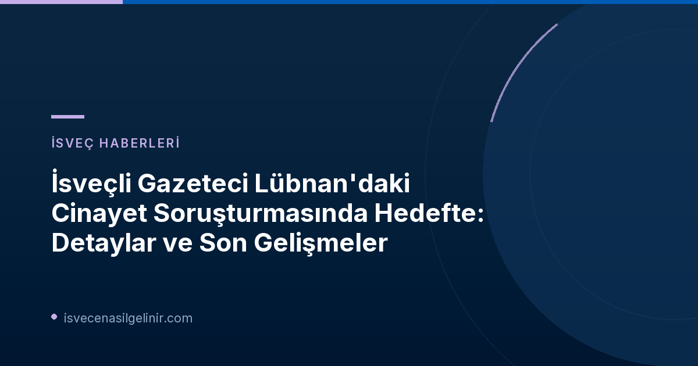

Olayın Perde Arkası: Lübnan'daki Cinayet ve İsveç Bağlantısı
Geçen yıl Ekim ayında Lübnan'da işlenen bir cinayet, uluslararası boyutta gündem olmayı sürdürüyor. Lübnan medyasına yansıyan haberlere göre, 26 yaşındaki bir adamın vurularak öldürüldüğü bu olayda, dört İsveç vatandaşı şüpheli olarak gösteriliyor. Cinayet kurbanının Malmö'de işlenmiş bir çifte cinayetten dolayı uluslararası düzeyde arandığı bilgisi, olayın karmaşıklığını daha da artırıyor.
Şüphelilerden birinin İsveçli bir gazeteci olması, durumu medya dünyası için de kritik bir hale getiriyor. Diğer üç şüphelinin ise organize suç örgütleriyle bağlantılı olduğu belirtiliyor ve bu isimler arasında kötü şöhretli "Foxtrot lideri" Rawa Majid de yer alıyor. Bu detaylar, cinayetin sadece yerel bir adli vaka olmaktan çıkıp, uluslararası suç ve medya ilişkileri ağının bir parçası olduğunu gösteriyor.
Gazeteciye Yöneltilen Suçlamalar ve Medya Haberleri
Lübnan medyası, soruşturma kapsamında İsveçli gazetecinin bir çete üyesiyle iletişim halinde olduğunu ve bu iletişimin sohbet kayıtlarıyla desteklendiğini iddia ediyor. TV4'ün aktardığına göre, sohbetlerde bir çete üyesinin gazeteciden, 26 yaşındaki kurbanın ölümünü teyit etmesi için yardım istediği öne sürülüyor. Bu iddialar, gazetecilik etiği ve suç haberleri araştırmasının sınırlarını yeniden tartışmaya açıyor.
Gazetecinin ve İşvereninin Savunmaları: Gazetecilik Faaliyeti mi, Suç Ortaklığı mı?
Gazetecinin Açıklamaları
Söz konusu gazeteci, SVT'ye yaptığı açıklamada, "Gazetecilik araştırmasının bir anda suç olarak tanımlanmasını görmek çok garip bir his" ifadelerini kullandı. Muhabir, işinin gereği olarak her gün yaptığı gibi bilgi doğrulama çabasında olduğunu vurguladı. Ancak, "Eğer söylentiler ve yanlış bilgiler yayılıyorsa bu elbette ürkütücü" diyerek endişesini de dile getirdi.
İşverenin Durumu Değerlendirmesi
Gazetecinin çalıştığı medya kuruluşu da SVT'ye yaptığı açıklamada, çalışanlarının yaptığının "rutin gazetecilik çalışması" olduğunu belirtti. Kurum, "Durum incelendiğinde ve çalışana yönelik tüm şüphelerin asılsız olduğu ortaya çıktığında, bu durumun tamamen netleşeceğinden eminiz" açıklamasını yaptı. Ayrıca, Lübnan medyasında yer alan bilgilerin kendileri için bir "tam sürpriz" olduğunu ve ne çalışana ne de kuruma Lübnan makamları tarafından herhangi bir bildirimde bulunulmadığını eklediler.
Bilgi Kutusu: Basın Özgürlüğü ve Hukuki Süreç
Bu dava, basın özgürlüğünün önemi ve gazetecilik faaliyetlerinin hukuki sınırları konusunda önemli soruları gündeme getiriyor. Gazetecilerin kamu yararına bilgi toplama ve doğrulama görevleri ile olası suç unsurlarına karıştığı iddiaları arasındaki çizgi, uluslararası hukukta ve gazetecilik meslek etiğinde hassas bir denge gerektirir. Masumiyet karinesi ve adil yargılanma hakkı, bu tür durumlarda temel prensiplerdir.
İsveç'te vatandaşlık süreçleri ve yasal haklarınız hakkında detaylı bilgi edinmek için sverigemedborgarskapsprov.com adresini ziyaret edebilirsiniz.
Lübnan ve İsveç Hukukunda "İddianame" Farkı
Lübnan medyasında "iddianame hazırlandığı" yönündeki ilk haberlere karşılık, gazetecinin işvereni önemli bir düzeltme yaptı. Kurum, olayın bir soruşturma hakimine iletildiğini ve henüz bir "iddianame" hazırlanmadığını belirtti. İşveren, Lübnan medyasındaki bu tür bilgilerin "çeviri hatalarından kaynaklanabileceğini" dile getirdi. Expressen gazetesi de Lübnan medyasında "iddianame" olarak bahsedilen durumun, İsveç hukuk sistemindeki iddianame kavramından farklı olduğunu teyit etti. Gazeteci de bu konuda kendini "çok güvende" hissettiğini ve olayın gerçeklerin ortaya çıkmasıyla düşeceğine inandığını belirtti.
Rawa Majid ve Çete Bağlantıları
Cinayet soruşturmasında adı geçen Foxtrot lideri Rawa Majid, İsveç'teki organize suç dünyasının önde gelen isimlerinden biri olarak biliniyor. Olayda diğer şüphelilerin de çete bağlantılarının olması, soruşturmanın sadece adli değil, aynı zamanda organize suçla mücadele boyutunu da güçlendiriyor.
SVT'nin Çalışma Prensipleri ve Meslek Etiği
SVT gibi kamu hizmeti yayıncısı olan bir kurumun, çalışanının adının böyle bir soruşturmada geçmesi, kendi yayın ilkelerine olan bağlılığını da gündeme getiriyor. SVT, haberlerinde "doğruluk ve tarafsızlık" ilkesini benimsediğini ve acil haber durumlarında tüm gerçekleri teyit etmek zor olsa bile, "neyi bilip neyi bilmediklerini" açıkça belirtmeleri gerektiğini vurguluyor. Bu durum, gazetecilik mesleğinin taşıdığı sorumluluğu ve şeffaflık ilkesini bir kez daha hatırlatıyor.
Referanslar:
- SVT Nyheter Inrikes: Svensk journalist utpekad i libanesisk mordutredning
İsveç Göçmenlik ve Vatandaşlık Süreçleri Hakkında Merak Ettikleriniz mi Var?
İsveç'e taşınma, oturum izni, çalışma ve vatandaşlık başvuruları gibi konularda güncel ve doğru bilgilere ulaşmak için rehberlerimizi inceleyin.